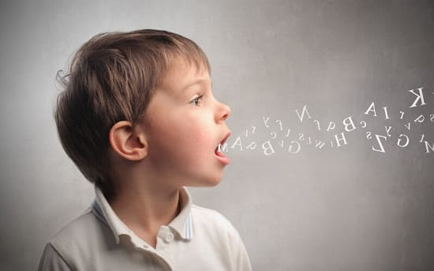
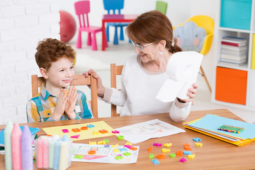

Дети, начинающие говорить, обычно проходят в развитии стадию, называемую нормальной дисфлуэнцией (потерей беглости речи). Учась говорить, они часто медлят или повторяют слова и слоги, например: «Я-я-яхочу...», «ко-ко-когда... мамочка придет домой...», «Мо-мо- мо... можно мне печенье?». Они часто используют слоги сомнения, так называемые заполнители, когда облекают мысли в слова: «эээ», «ууу», «ммм», и особенно тянут речь, когда напряжены, устали, взволнованы, беспокоятся, торопятся что-то сказать, говорят на новые или сложные темы или когда им кажется, что из них вытягивают ответ. Дисфлуэнция особенно часто встречается на сложных для произнесения звуках, таких как «Л» — «пулу... лук». Маленький языковед не знает, что он говорит неправильно. Крошечным говорунам нравится экспериментировать с различными звуками и последовательностями, и это вполне нормально.
КОГДА БЕСПОКОИТЬСЯ
Ниже описаны признаки того, что у вашего ребенка, возможно, не просто нормальная дисфлуэнция, и ему может потребоваться речевая терапия:
СОВЕТ ДОКТОРОВ СИРС: НЕ ДАВИТЕ НА РЕБЕНКА Наш главный совет по речевой терапии: ребенок прежде всего должен чувствовать себя комфортно разговаривая, а уж потом говорить правильно. |
ЧТО ДЕЛАТЬ
Ведите речевой дневник. Если вы замечаете постепенное улучшение на протяжении 6 месяцев и ваш ребенок начинает говорить более бегло, скорее всего, у него нормальная дисфлуэнция, а не заикание, и лечение ему не требуется. Ваш ребенок заикается, когда он устал, взволнован, торопится или когда он говорит с незнакомыми? Умственное напряжение может привести к речевому напряжению. Однако если он заикается и в другое время и улучшения на протяжении 6 месяцев не наблюдается, задумайтесь о речевой терапии.
СОВЕТ ДОКТОРОВ СИРС: РАССКАЗЫ ДЛЯ РЕЧЕВОГО РАЗВИТИЯ Дети более бегло говорят, когда рассказывают о своих любимых предметах. Пригласите ребенка к разговору о чем-то, что он любит. Дайте ему понять, что его интересно слушать и что вам нравится слушать его истории. Опять же, никаких суждений о «правильности» его речи. |
Делайте разговоры приятными. Как мы сказали выше, важно, чтобы дети чувствовали себя удобно при разговоре, прежде чем им придется сконцентрироваться на правильной речи. Дети не осознают, что говорят «неправильно». Им просто нравится экспериментировать с различными звуками и последовательностями. Кроме того, не привлекайте внимание к тому факту, что он «заикается» или «говорит неправильно».
Разговаривайте глядя в глаза. Научите ребенка чувствовать себя комфортно при использовании языка тела во время разговора. Если он отвлекается, когда говорит, привлеките его внимание к себе, обратившись к нему по имени: «Сэмми, мне нужны твои глаза, мне нужны твои уши».
Будьте внимательным слушателем. Дети более отчетливо говорят, если их слушатель верит, что им нужно сказать что-то важное.
Слушайте терпеливо. У детей, чувствующих, что их торопят, будет больше вероятность утраты беглости речи. Если ваш ребенок запинается в предложении, не обращайте на это внимания. Сохраняйте свою обычную внимательность, поддерживайте контакт глазами и терпеливо ждите, пока он закончит. Кроме того, не поддавайтесь соблазну закончить речь ребенка или поторопить его завершить предложение. Позвольте ему «совершать ошибки», пробуя различные звуки.

СОВЕТ ДОКТОРОВ СИРС: ПОЙТЕ, ПОЙТЕ, ПОЙТЕ Пение — веселый способ «речевой терапии». Пение учит детей, как правильно использовать язык и голосовые мышцы. Это расслабляет, забавляет и позволяет ребенку удлинять гласные и другие звуки. Неужели ваш ребенок не предпочтет «уроки пения» посещению логопеда? |
Речи обучаются, а не обучают. Вместо того чтобы поправлять ребенка, просто сами повторите предложение «правильно». Говорите медленно и разборчиво и дайте ребенку шанс повторить за вами. Вы можете мягко поправить, своевременно сказав: «Медленнее» или «Повтори еще раз».
КОГДА НАДО ВЕСТИ РЕБЕНКА К ЛОГОПЕДУ
Если ваш ребенок начинает все больше ощущать дискомфорт во время разговора, лучше получить помощь раньше, чем позже. Вы ведь хотите, чтобы ребенок чувствовал себя более удобно при разговоре и общении, когда он начнет ходить в школу, поскольку заикание может стать предметом высмеивания. Отведите ребенка к логопеду, если:
Сертифицированный логопед может сказать вам, проходит ли ваш ребенок стадию нормальной дисфлуэнции или действительно существует какая-то проблема. Логопед также может подсказать вам, как вы можете помочь своему ребенку дома, и дать список веселых игр для развития речи. Наконец, опытный логопед может определить анатомическую проблему, такую, как врожденное укорочение уздечки языка или давление языком, которые мешают нормальному процессу речи, и научит вашего ребенка правильно действовать языком.
Здоровье ребенка от докторов Сирс / Сирс У. и др.